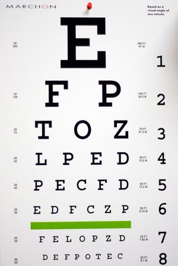
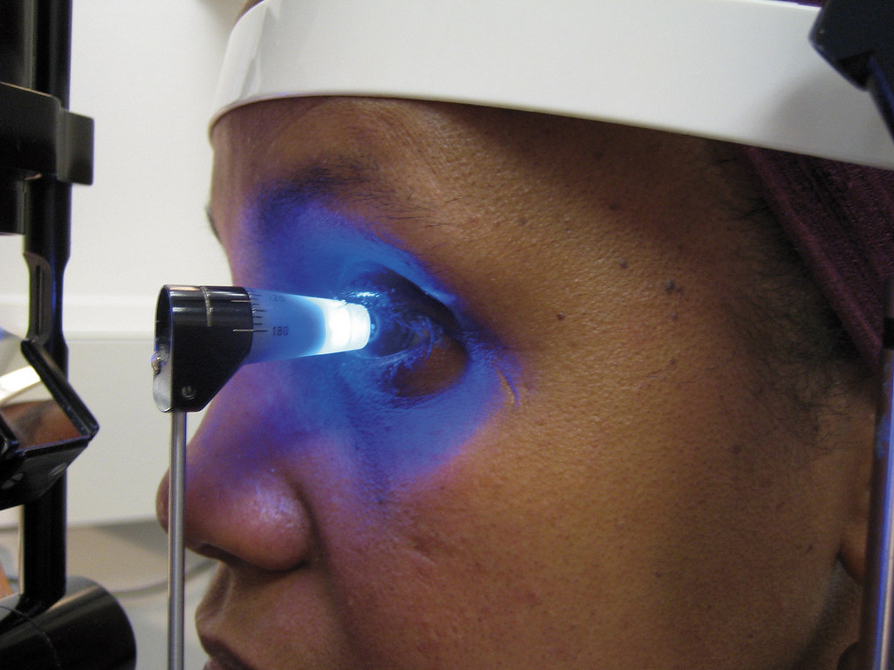
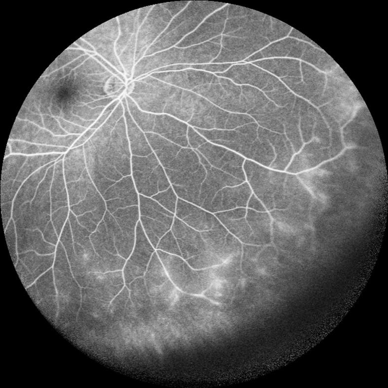
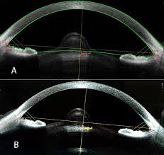

How is Diabetic Retinopathy Diagnosed
Visual Acuity Test
- Using a Snellen eye chart, the doctor measures how well you see at different distances.
- Determines whether your vision is 20/20. (Cleveland Clinic)

Tonometry
- Measures intraocular pressure inside the anterior chamber of the eye.
- Helps test for eye injuries or early signs of glaucoma. (Cleveland Clinic)

Fluorescein Angiography
- A fluorescent dye is injected into the bloodstream to highlight the eye’s blood vessels.
- Photographs are taken to determine whether vessels are leaking or not supplying parts of the retina. (Hopkins Medicine)

Optical Coherence Tomography (OCT)
- A noninvasive imaging test using infrared light to create detailed cross-sectional images of the retina.
- Allows specialists to see retinal layers and measure tissue thickness to diagnose and monitor diseases. (Cleveland Clinic)

References
All images on this page are retrieved from Google Images with creative commons license
Professional, C. C. M. (2025, November 12). Visual Acuity Test (Snellen Eye Test Chart). Cleveland Clinic. http://my.clevelandclinic.org/health/diagnostics/24421-visual-acuity-test
Professional, C. C. M. (2025a, November 12). Tonometry. Cleveland Clinic. https://my.clevelandclinic.org/health/diagnostics/22859-tonometry
Hopkins: https://www.hopkinsmedicine.org/health/conditions-and-diseases/diabetes/diabetic-retinopathy
Professional, C. C. M. (2025a, November 12). Optical Coherence Tomography (OCT). Cleveland Clinic. http://my.clevelandclinic.org/health/diagnostics/optical-coherence-tomography-oct